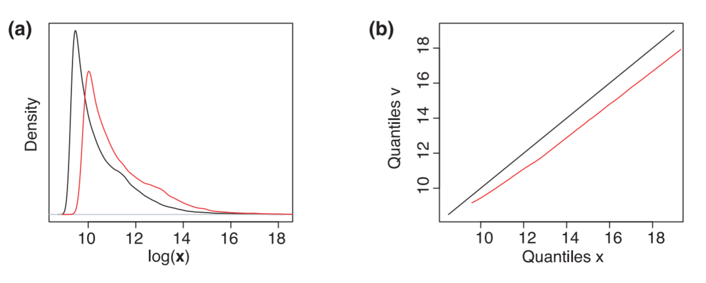

Normalization¶
Normalization aims to remove unwanted technical variation (e.g., signal drift, injection-to-injection variability, and batch effects) while preserving true biological differences.
In typical workflows, normalization is applied before downstream steps such as data transformation and scaling.
Signal drift and batch effect

Methods¶
General (global scaling)¶

Global scaling methods (sum/mean/median) apply a single sample-wise scaling factor so that all samples have the same total intensity (or the same mean/median intensity).
- Typical use: when most features are expected not to change strongly across samples.
- Risk: if a large fraction of features truly changes (e.g., strong global shifts), global scaling can remove biological signal.
Common choices
- sum: forces the sum of intensities per sample to be equal.
- mean: forces the mean intensity per sample to be equal.
- median: forces the median intensity per sample to be equal (often more robust than mean).
- mTIC: modified total ion current scaling; a TIC-style sample-wise scaling intended to be more robust than raw TIC when a subset of features is unstable.
Calculation (conceptual)
For feature intensity $I_{m,n}$ (feature $m$, sample $n$):
- Compute a sample-wise scaling factor $s_n$ (e.g., sample sum / global reference sum).
- Normalize: $I'{m,n} = I / s_n$.
Internal-standard based¶

Internal-standard (IS) normalization scales each feature using one or more spiked compounds expected to track technical variation.
- Typical use: targeted/quantitative workflows or untargeted workflows with good IS coverage.
- Requirement: IS should be stable and behave similarly to analytes (ideally class- and RT-matched).
Practical strategy
- Select the “best” IS (or IS set) based on low CV in pooled QC samples.
- Methods such as NOMIS use multiple IS to improve robustness.
Common choices
- bestis: normalization each feature using the "best" internal standard (the one that shows the highest correlation with the feature across QC samples).
- lowCV: normalization using the internal standard with the lowest CV in pooled QCs.
- nomis: normalization using multiple internal standards (multi-IS strategy).
Calculation (conceptual)
For a chosen internal standard signal $IS_{p,n}$ in sample $n$:
- $I'{m,n} = I$} / IS_{p,n
Sample-wise dilution / size-effect normalization¶
These methods aim to correct sample-to-sample dilution or total-amount differences that affect many features.
- PQN (probabilistic quotient normalization): estimates a sample-specific dilution factor from the distribution of feature-wise quotients relative to a reference (often a pooled QC or a median sample) and scales the sample accordingly.
Note: PQN assumes that most metabolites do not change strongly and that the dominant difference is a global dilution/size effect.
Distribution-based (between-sample) normalization¶
These methods reshape sample distributions to make them more comparable. Use with care if global shifts are expected.
- quantile: forces samples to have the same empirical distribution (common in transcriptomics; can be useful for strongly distribution-driven batch effects but may remove real global biology).
- contrast: a contrast-based rescaling approach used in some -omics toolchains to reduce distributional differences (implementation varies; document the software and parameters).
- liwong: Li–Wong style normalization (originating from microarray processing); if used, document the exact implementation because details differ across tools.
Linear batch-effect adjustment¶

Linear methods explicitly model batch effects and remove them.
- Examples: limma, ComBat.
- Idea: treat batch as a covariate in a linear model and adjust the data accordingly.
- Requirement: batch structure must be known and reasonably represented in the data.
Additional model-based methods sometimes offered by tools:
- linear: a generic label for linear-model adjustment.
Non-linear drift correction¶

Non-linear methods model intensity-dependent drift, often using QC injections across the run.
- Example: LOESS/LOWESS.
- Idea: model paired differences (often on an MA plot: log fold-change vs mean intensity) as a smooth function of intensity/time.
Additional non-linear options you may encounter:
- cubic: cubic smoothing/interpolation-based correction.
- batch_loess: LOESS-based correction applied within batches (typically leveraging QC injections and run order).
- batch_ratio: ratio-based within-batch correction relative to QC/reference samples.
Signal-dependent non-linear¶

Signal-dependent non-linear methods correct drift using distribution/quantile behavior.
- Example: Q-spline.
- Idea: model paired data at multiple quantiles as a function of mean intensity to handle intensity-dependent effects.
Machine-learning based drift correction¶
These approaches learn drift patterns from QC injections and correct sample intensities accordingly.
- SERRF: QC-based machine-learning drift correction (random-forest style approaches are commonly used) designed to reduce run-order/batch drift.
- svm: support vector machine-based correction (implementation varies; typically uses QC/run-order information to model drift).
Note: ML-based correction can be powerful but should be validated carefully (e.g., improvement in pooled-QC RSD without collapsing biological group separation).
Evaluation¶


Use both visual and quantitative checks, focusing on QC samples.
Recommended evaluation is before vs after normalization, using the same feature table and QC definitions.
Visual checks¶
- PCA (colored by sample type and batch): pooled QC injections should cluster tightly after normalization; separation by batch should be reduced.
- PCA (colored by run order/time): check whether run-order trends are reduced.
- Run-order drift plots (QC only): for a set of representative features (or summary statistics), plot intensity vs injection order.
- Boxplots/density plots:
- Across samples: distributions should become more comparable.
- Watch-out: forcing distributions to match too strongly (e.g., aggressive distribution normalization) can remove real global biology.
Quantitative QC metrics¶
Compute metrics primarily on pooled QC injections (or on technical replicates).
- RSD% in pooled QC per feature:
- the distribution of QC RSD shifts lower after normalization.
- MAD / robust variance in pooled QC:
- Prefer robust metrics when outliers exist.
- QC correlation:
- Pairwise correlation between pooled QC injections should increase after normalization.
Overcorrection checks¶
- Known biology / positive controls: if you expect specific changes, ensure they are not eliminated.
- Internal standards: their behavior should become more consistent, but IS correction should not create implausible shifts in unrelated features.
- Biological group structure:
- Normalization should reduce technical separation (batch/run-order) without collapsing real biological differences.
- If groups become indistinguishable only after normalization, re-check assumptions and method choice.